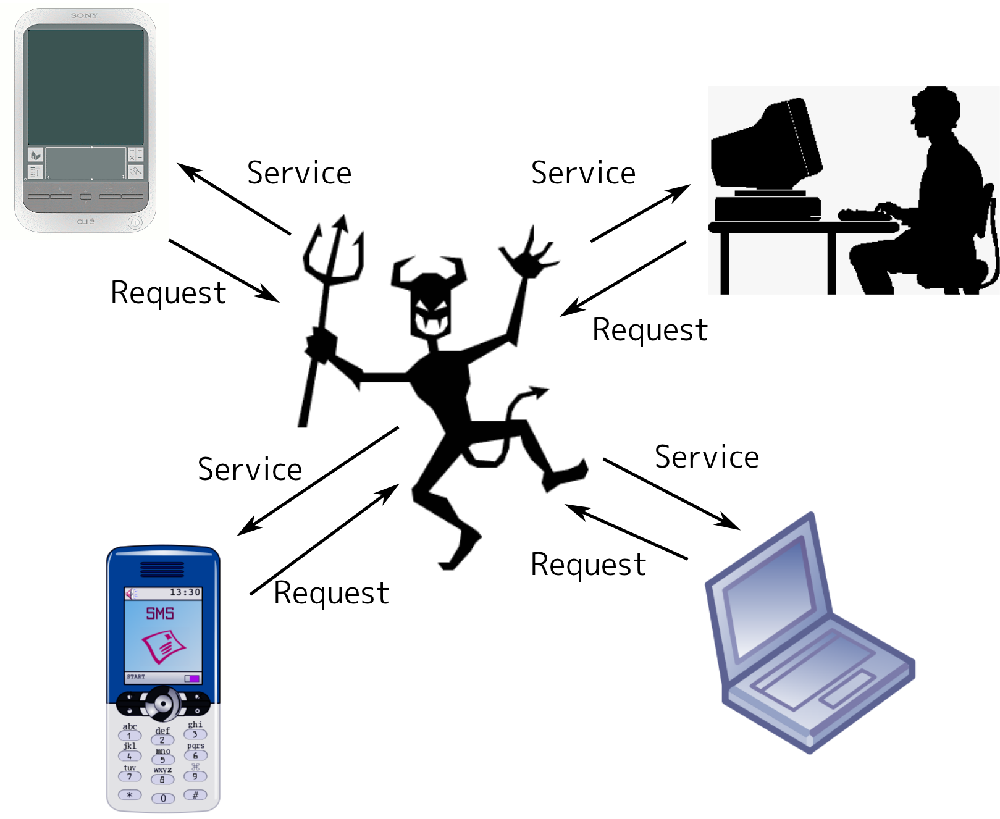

手抜き感でいっぱいです！！！
20分（くらい）でできるサーバ

定義から入力と出力を定義してみる
なんだ、簡単そうじゃん
実は結構めんどくさい
今回は Telnet というツールを使ってほとんどを代行してもらいます
窓OSは知らないんじゃなかったの…？
補足: Windowsでは諸事情で文字化けします
しない方法がありました
PowerShellを使って
> [console]::InputEncoding=[text.encoding]::UTF8
してからならだいじょうぶ
実演はLinuxでやります
<?xml version="1.0" encoding="utf-8"?>
<!DOCTYPE html PUBLIC "-//W3C//DTD XHTML 1.0 Transitional//EN"
"http://www.w3.org/TR/xhtml1/DTD/xhtml1-transitional.dtd">
<html xmlns="http://www.w3.org/1999/xhtml" xml:lang="ja" lang="ja">
<head>
<meta http-equiv="content-type" content="text/html; charset=utf-8" />
<meta http-equiv="content-style-type" content="text/css" />
<meta http-equiv="content-script-type" content="text/javascript" />
<meta name="copyright" content="©DeNA Co.,Ltd." />
<meta name="keywords" content="DeNA,モバイル,eコマース,広告代理事業,ビッダーズ,モバオク,Mobage,モバコレ,ポケットビッダーズ,モバデパ,ポケットアフィリエイト" />
<meta name="description" content="世界を切り拓く永久ベンチャー、株式会社ディー・エヌ・エー（DeNA）の公式ウェブサイトです。" />
<meta name="robots" content="index,follow" />
<meta name="googlebot" content="index,follow,archive" />
<link rel="stylesheet" href="/css/style.css" type="text/css" media="all" />
<link rel="shortcut icon" type="image/x-icon" href="/favicon.ico" />
<link rel="icon" type="image/png" href="/favicon.png" />
<link rel="alternate" type="application/rss+xml" title="株式会社ディー・エヌ・エー プレスリリース RSS Feed" href="http://www.dena.jp/press/atom.xml" />
<link rel="alternate" type="application/rss+xml" title="株式会社ディー・エヌ・エー トピックス RSS Feed" href="http://www.dena.jp/topics/atom.xml" />
<title>[DeNA] 株式会社ディー・エヌ・エー</title>
<script type="text/javascript">
var _gaq = _gaq || [];
_gaq.push(['_setAccount', 'UA-24340516-1']);
_gaq.push(['_trackPageview']);
(function() {
var ga = document.createElement('script'); ga.type = 'text/javascript'; ga.async = true;
ga.src = ('https:' == document.location.protocol ? 'https://ssl' : 'http://www') + '.google-analytics.com/ga.js';
var s = document.getElementsByTagName('script')[0]; s.parentNode.insertBefore(ga, s);
})();
</script>
</head>
<body class="top">
<div id="header">
<div class="inner">
<h1 class="logo hover"><a href="/" tabindex="1"><span>株式会社ディー・エヌ・エー</span></a></h1>
大丈夫、きっとブラウザがうまくやってくれます
大事なのはクライアントは結構単純ということ
簡単に作れるはず！
実際に作ってみよう
→今回は Web サーバを作ってみます
というわけで、プログラミングパートのスタート
結局これがやりたかっただけなんじゃ…？
例: "/A" => contents/A の中身を返す
my $base_path = "contents/"; # 基準ディレクトリ
sub handle_request { # リクエスト1つを処理する
my ($self, $cgi) = @_;
my $path = $cgi->path_info();
# Search $path
my $ok = 0;
$ok = find_path(dir($base_path, $path)); # ファイル存在確認
if ($ok) { # ファイルあった
print "HTTP/1.0 200 OK\r\n\n";
# ファイルの中身を返す
print load_content(dir($base_path, $path));
}
else { # ファイルなかった
print "HTTP/1.0 404 Not found\r\n"; # なかったと言う
print $cgi->header,
$cgi->start_html('Not found'),
$cgi->h1("$path Not found"),
$cgi->end_html;
}
}
おわかりいただけただろうか？
もうちょっとまともなものにしたいよねー
# ファイルなし & "/"で終わる
# index.html 付きで見付かったらそれを探してたことにする
if (!$ok && end_with_slash($path)) {
$ok = find_path(dir($base_path, $path, "index.html"));
if($ok) {
$path = $path . "index.html";
}
}
sub end_with_slash { # "/"で終わるかどうかの判定
my $path = shift;
if ($path =~ m{/$}) { # 正規表現という怪しい記述
return 1;
}
return 0;
}
# dispatch table
my %dispatch = (
'/hello' => \&resp_hello, # 本体は次ページ
);
# %dispatch にあればサブルーチンリファレンス, なければ undef
my $handler = $dispatch{$path};
if ($ok) {
ファイルが見付かった場合の処理（前と同じ）
}
elsif (ref($handler) eq "CODE") { # %dispatch hit!
print "HTTP/1.0 200 OK\r\n";
$handler->($cgi);
}
else {
ファイルが見付からなかった場合の処理（前と同じ）
}
sub resp_hello { # "/hello" で呼ばれる
my $cgi = shift;
return if !ref $cgi;
my $who = $cgi->param('name'); # name=ほげほげ を解析
if (!defined $who) { # 実は指定されてなかったとき
$who = "Someone"; # エラー回避処理
}
print $cgi->header,
$cgi->start_html("Hello"),
$cgi->h1("Hello $who!"), # 挨拶部分
$cgi->end_html;
}
HTTP::Server::Simple::CGI <- MyServer <- MyServer2
基本機能のみ 拡張機能つき
となっていました
などなど、様々な機能が実装されています
→DeNAのサービスを実現する技術の一部です